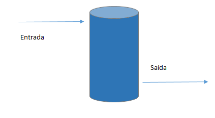
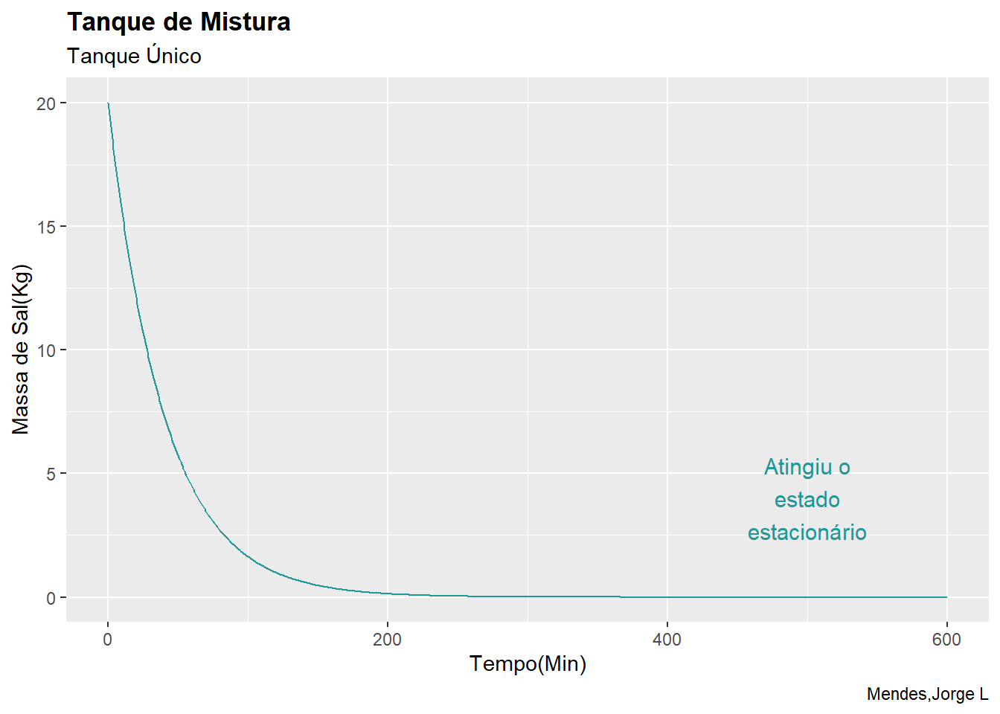
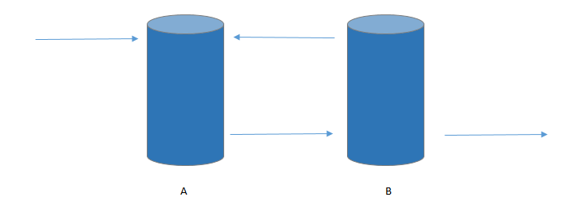
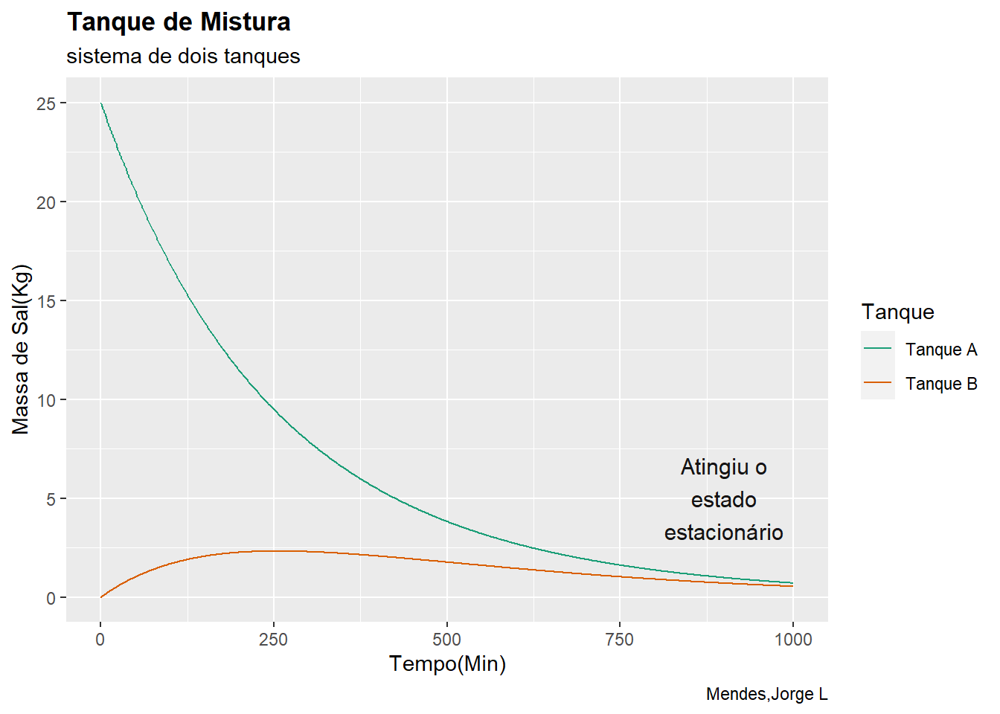

Introdução
Na ciência sempre seguimos o roteiro observar o fenômeno, teorizar sobre ocorrido, propor um modelo físico e testar a hipótese. Minha parte favorita é a área da modelagem, nela conseguimos estruturar o problema a ser resolvido dando para outros campos como a simulação e a otimização.
Na engenharia química (e nas outras engenharias) temos que lidar com balanços para modelar diversos processos. Primeiro definimos o volume de controle que basicamente é nossa região de interesse de estudo, analisamos os equipamentos envolvidos e o que acontece na fronteira do volume do controle (taxas de material e/ou de energia que entrem ou que saiem).
Em problemas numéricos temos que lidar com o custo computacional, ou seja, o tempo processamento do modelo. Quanto mais simplificado o modelo menor será o custo computacional, logo você deve ter sabedoria na escolha do modelo, nos algoritmos de resolução e da precisão necessária. A biblioteca (Soetaert, Petzoldt, and Setzer 2010) é uma ferramenta muito interessante para resolver as EDO’s, EAD’s e EDA.

O destilador binário é um ótimo exemplo por que podemos analisar de muitas formas cada região/equipamento obtendo uma quantidade de equações que descrevem melhor o processo.
Bibliotecas
Problemas
Tanque de Mistura
Imagine que temos um tanque onde água e sal são misturado perfeitamente. Nele ocorre uma entrada e uma saída de material e gostariamos de analisar como a massa de sal se comporta ao longo do tempo.

Partindo da equação de balanço de massa podemos equacionar da seguinte forma:
\[ E - S -r_j = A_c \]
Nosso problema não envolve reação química. Podemos escrever a equação na forma de taxa de vazão mássica. A taxa de acúmulo descreve se ocorre alguma variação de algum parâmetro ao longo do tempo e quanto é essa variação.
\[ \frac{dm}{dt} = M_{entrada} - M_{saída} \]
\[ \frac{dm}{dt} = 0 ,\ o \ regime\ é\ estacionário, \ se \ não, \ é\ transiente \]
lembrando que a vazão mássica pode ser escrita em termos da vazão volumétrica e a concentração da massa:
\[ M = Q.C \]
\[ C = \frac{m}{Vol} \]
Construção do modelo
Agora podemos espeficar os parâmetros
parametros <- c(Qin <- 25, #taxa de entrada L/min
d <- 0, #concentração de sal na entrada kg/L
Qout<- 25, #taxa de saída L/min
V <- 1000) #volume do tanque em L
yinicial <- c(Ma =20) # condição inicial em kg
times <-seq(0,600) # min
Resultado <-ode(yinicial,times,Tanque_Mistura_1,parametros,method ="bdf")A descrição visual do problema:
texto <- paste(strwrap("Atingiu o estado estacionário",10),collapse = '\n')
ggplot() +
aes(x = Resultado[,"time"],y = Resultado[,"Ma"]) +
geom_line(color = "#209799") +
labs(y = "Massa de Sal(Kg)", x = "Tempo(Min)",title = "Tanque de Mistura",
subtitle = "tanque Único", caption = "Mendes,Jorge L") +
annotate("text",y = 4,x =500,label = texto, colour = "#209799",
size = 4) +
theme(plot.title = element_text(face = "bold"),
plot.subtitle = element_text(family = "italic")) 
O modelo se comportou como esperado. A vazão de entrada era só de água pura, ou seja, quantidade de sal era nula, logo a quantidade de sal no tanque tende a diminuir com o passar do tempo até atingir o regime estacionário.
Nesse segundo exemplo há um sistema com dois tanques com um refluxo.

Agora podemos espeficar os parâmetros:
parametros <- c(F1 <- 3, #taxa de entrada L/min
F2 <- 4,#taxa de entrada L/min
F3 <- 1,#taxa de entrada L/min
F4 <- 3, #taxa de entrada L/min
d <- 0., #concentração de sal na entrada kg/L
V <- 1000) #volume do tanque em L
yinicial <- c(Ma =25,Mb = 0) # condição inicial em kg
times <-seq(0,1000) # min
Resultado <-ode(yinicial,times,Tanque_Mistura_2,parametros,method ="bdf")A descrição visual do problema:
texto <- paste(strwrap("Atingiu o estado estacionário",10),collapse = '\n')
ggplot() +
geom_line(aes(x = Resultado[,"time"],y = Resultado[,"Ma"],
color = "Tanque A")) +
geom_line(aes(x = Resultado[,"time"],y = Resultado[,"Mb"],
color = "Tanque B")) +
labs(y = "Massa de Sal(Kg)", x = "Tempo(Min)",title = "Tanque de Mistura",
subtitle = "sistema de dois tanques", caption = "Mendes,Jorge L",
color = "Tanque") +
scale_color_brewer(palette = "Dark2") +
annotate("text",y = 5,x =900,label = texto, colour = "#141313",
size = 4,face ="bold") +
theme(plot.title = element_text(face = "bold"),
plot.subtitle = element_text(family = "italic")) 
Note que houve um breve aumento de sal no tanque B, pois a alimentação do tanque do B tem uma quantidade de sal diferente da alimentação do tanque A que possui uma concentração nula.
Extra
O deSolve oferece diversos métodos para resolução de EDO’s como o BDF, Runge-Kutta, adams e etc. Para aqueles que tenham interesse em resolver na mão chegando na equação uma das minhas abordagens favoritas para resolução de EDO é a transformada de laplace. Basta ter uma tabela das transformadas de laplace tornando a resolução mais fácil que o convencional.
\[ ℒ\left(\{f(t)\}\right) = F(S) \]
Podemos fazer uma visualização do processo utilizando uma representação por blocos com o mermaid que é uma ferramenta do quarto.
sequenceDiagram participant EDO com condição inicial participant Problema Algébrico participant Solução Algébrica participant Solução da EDO EDO com condição inicial->> Problema Algébrico: Transformada de Laplace Problema Algébrico->>Solução Algébrica: mais fácil Solução Algébrica->>Solução da EDO: Transformada Inversa EDO com condição inicial->> Solução da EDO: mais difícil